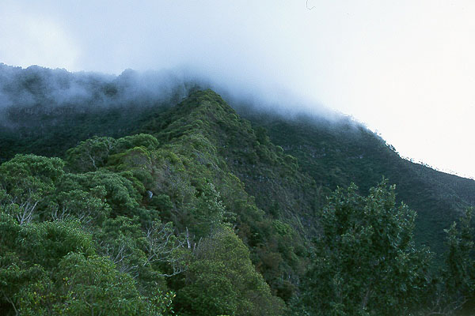
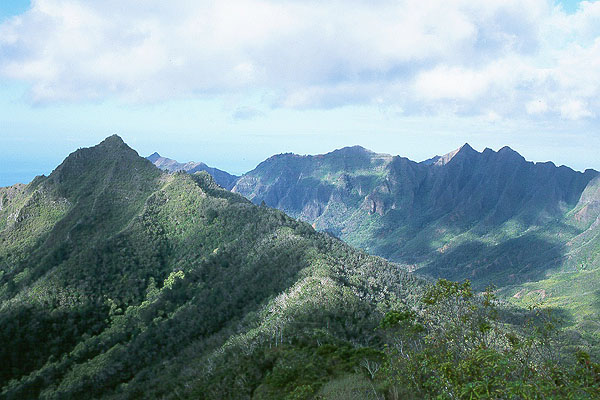
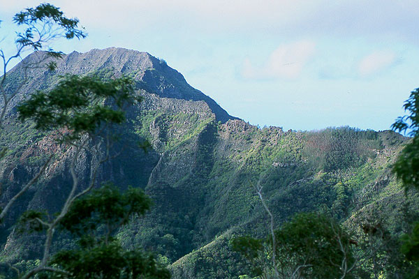
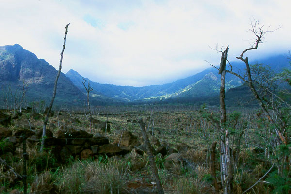
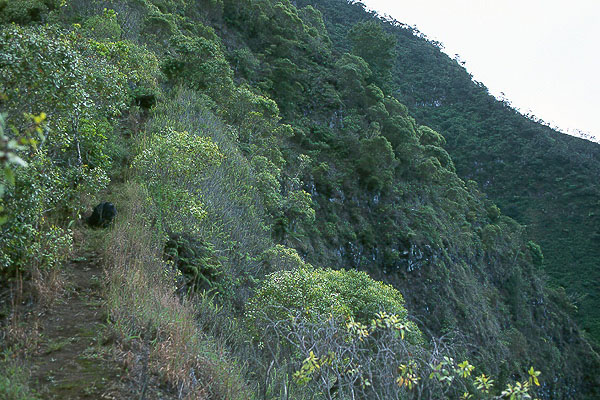
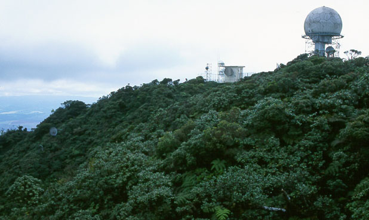
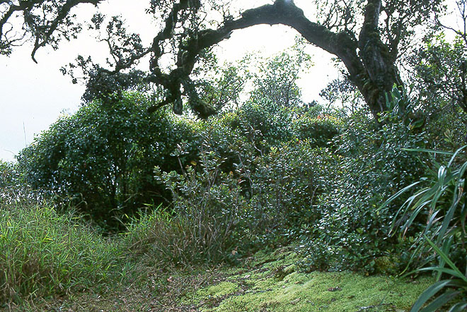
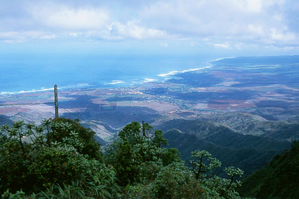

Mount Ka'ala
November 22, 2001
Kris’s family and friends had warned me about hiking on the leeward side of the island, expecting that murderous gangs of pakalolo growers would kidnap me, and leave my mulilated body in a pineapple field. Or something equally horrible would happen! At the very least, the rental car would be vandalized in rude and shocking ways. But I was determined - a hiker we met on Olomana said the hike up Kaala was one of the best, and quite challenging too. A compromise was worked out: Kris would drop me off at the trailhead, and come back exactly seven hours later to get me. At any sign of people I would either hide or whip out mom’s cell phone and pretend to call the police! (the phone didn’t actually work).








In the midst of all this paranoia, the trailhead really was an unfriendly place. Deserted except for 9 bull-terriers swarming around the car in a pack. Somewhat short of temper, I unwisely got out of the car and presented myself for mauling. My determination was such that I wouldn’t leave unless a) I climbed the mountain or b) I was bleeding severely. Faced with a madman, the dogs quailed and returned to their junkyard across the street. Also due to the safety concerns, I was intent on speeding away from the road, and getting Kris out of there too. Somewhat less high strung, she had decided to take a nap in the car at the trailhead as I walked away. Getting all wrought up about it, I wouldn’t let her, and she finally left, grumbling, when I threatened to honk the horn and bring the dogs back, who were even now watching us through the brush, perhaps deciding they had overestimated me.
Hiking up the steep road, rocks in hand for defense, I was off to a bad start. I muscled my way jerkily up the steep road, eyeing blackened stone walls and trees on either side. The road finally ended after gaining about 1000 feet, becoming a trail in forest. I passed a shrine with rocks wrapped in leaves. Somehow, this was relaxing, and I began to forget the start of the day and focus on Now. There was an amazing bird with a hysterical laughing cry. A smell of vineager filled the forest, presumably rotting fruits. I climbed quickly, reaching a landmark set of utility poles on a ridgetop. It took 1 hour and 15 minutes to get here, but I was more than halfway. I took a rest, and admired views of the Waianae Range, with craggy ridges off to the right, and Waianae Town below on the left. It was a beautiful day, although the summit of Kaala was shrouded in cloud. In my experience, it always was. Kaala is the highest peak on Oahu at 4000 feet. I had been climbing from dry, dusty lowlands of Waianae valley, which looked more like New Mexico than the lush Windward Oahu I had yet seen. But the ironic twist is that after all that climbing, you end up in a swampy bog which fills the summit plateau. The cloud that hung over the summit protected ancient species of flora in a tiny but magnificent rainforest ecosystem. There was a huge FAA installation and a restricted government road up there too, but I tried to ignore that.
Continuing up the narrowing ridge, the dropoffs became greater, and I clambered over some entertaining boulders blocking the way. One of them was festooned with old ropes, even a rope ladder of yellow nylon. I was able to climb around the ladder on the right, but finally gripped one of the ropes at an exposed point. The way became steep enough to warrant almost continuous fixed ropes along a slick, muddy washout surrounded by blackberry bushes. The way continued like this for over 1000 feet of scrambling, then abruptly leveled out as I came over a headwall. The cloud ceiling had lifted to provide me with expansive views to the south. I entered the bog, following a winding path on wooden planks. The flora grew to a height of 9 feet, but there were no larger trees. Everything had a kind of minaturized appearance. Later, I read this was due to nutrient deprivation. The FAA installation came into sight, and soon I emerged onto a one lane road. My guidebook described the true summit as being on the other side of the installation, and I needed to walk around a barbed-wire fence to get there. Suddenly, two soldiers appeared and told me to keep 30 feet away from the fence. To do that I would have had to crash through the bog for an hour, since there was only a 5 foot clearing around the fence, so I left the true summit for happier times. Still, I got a very good view from another point looking north. It was 10 am, so I had taken 2 hours and forty minutes to get up.
I was thinking about the famous Dupont trail, which ascended a northern ridge of the mountain. I had wanted to descend that way, but I needed a bewildering array of permissions to cross private land at the base of the route. I decided I would descend as much of it as I had time for, then turn around and go back the way I came. I knew I’d need a very full day to get far with this plan, so limited myself to descending 1000 feet. As I ate cookies near the summit and thought about this plan, a group of hikers emerged from the Dupont trail and looked at me curiously. I waved and got no response, just stares. I waved again, and one of their member gave a half-hearted return wave. Then he went up to talk to the armed solders by the fence. I started to feel a little unwelcome, so I set off down the Dupont way, first on concrete steps to radio installations partway down the beautiful ridge. The steps ended, and very quickly the trail became quite difficult. I must have falled 5 times from icy slick mudhole to mudhole as the trail became a slide. Each time I saved myself by clutching at blackberry thorns. Soon, the continuous fixed lines appeared, and these allowed me to lower myself down the mudslide without slipping. Covered in mud and scratches, I was having a hard time enjoying the descent, knowing I’d have to come right back up. At a flat spot 800 feet down, I took a break then headed back up. It was much easier to ascend this terrain, but I was getting a little tired. In the bog I passed the day packs of the hikers, and heard voices chattering in the bushes. I decided not to scare them again (with my now very muddy appearance!) and glided by, back to my lonely trail. The clouds had dropped as I concentrated on lowering myself with the fixed ropes. Some of the ropes weren’t really ropes, but sections of extension cords with sharp copper wire sticking out.
I emerged from the cloud above the utility pole, then wondered what to do with my extra time. I read about another trail I could use to loop back to the car. From the poles, I took a branch that continued on a broadening ridge. Taking a steep trail down from the ridge I suddenly wished for more time, because by continuing up the ridge, I could climb a satisfyingly pointy summit about 1 mile distant. But I contented myself with the steep eroded trail down, which was formerly a trail used by native Hawaiians. As I entered the forest, I had a long conversation with a bird whose cry began as a series of searching upward tones, followed by a confident sequence of “whip-pe-ty-wow! whip-pe-ty-wow!” I liked the contrast between the free-form start of the cry, and the mechanical, complex terminating sequence. Finally, I stopped answering, and when I tried to start up again later the bird had lost interest or flown away. As I came into the dry valley, the cares and worries about Samoans beating me up because my skin was too white and other nightmares my relatives asserted to be based in fact crowded around me. But I didn’t want them. I continued walking down the road, past some burned out cars and “no shooting” signs peppered with buckshot. Kris found me near the bus turnaround in the valley. I decided to stop before there, since I had enough problems with high-school kids when I was in high-school myself. All in all, this was a great way to spend the day before Thanksgiving. Thanks to Kris for the shuttle service!